Professional · Zoning automation · Archive
NYC digital zoning automation and analysis.
The practice of city-wide zoning defines potentials of both building forms and public space, through a set of static prototypes (i.e. zoning districts, lot types) and rules (i.e. setbacks, incentives). Code2Code is a digital toolkit developed for the New York City Department of City Planning, including automating 3D scenarios of existing and proposed zoning code, enhancing the workflow of rezoning studies, and performance-based planning research.
Duration
2018 — 2019
Status
Archive
Client
NYC Department of City Planning
01 · From code to code
It translates zoning regulations into computational languages and automatically generates building massing based on GIS data.
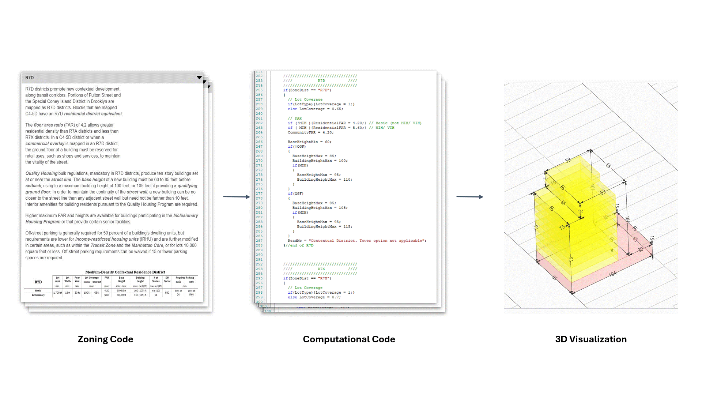
02 · The workflow
RWCDSs run through planning, urban design, and environmental review. Code2Code automates the modeling and calculation steps in the middle of that chain.
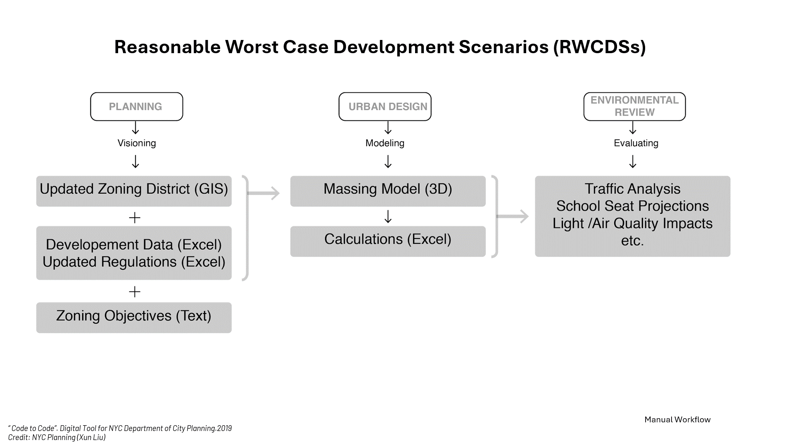
03 · The toolkit in Rhino
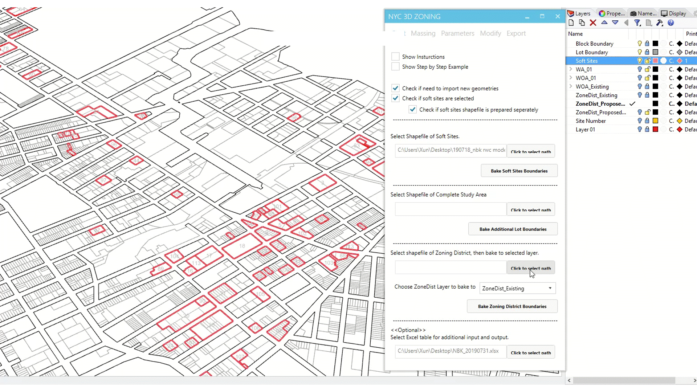
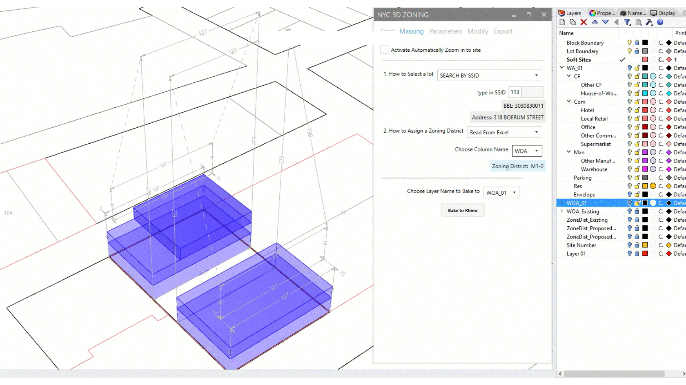
04 · Envelope & design options
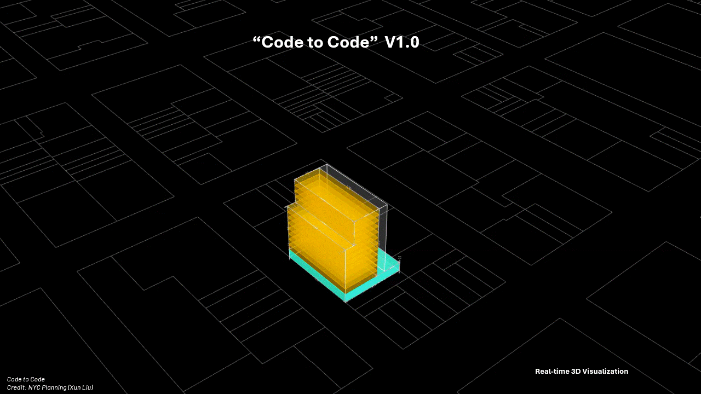
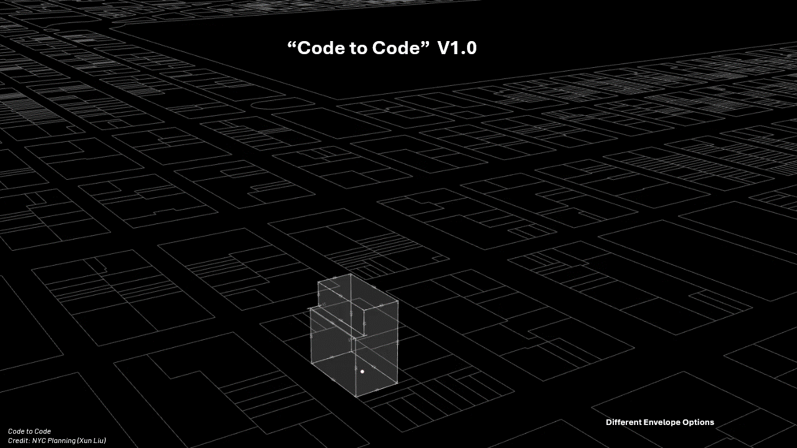
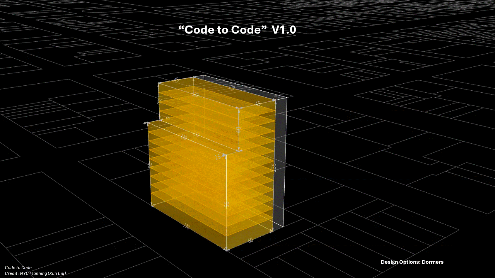
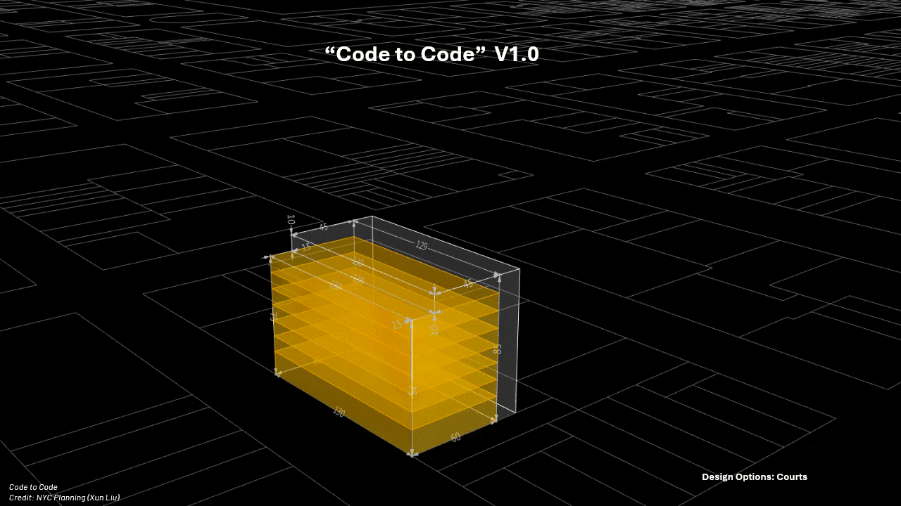
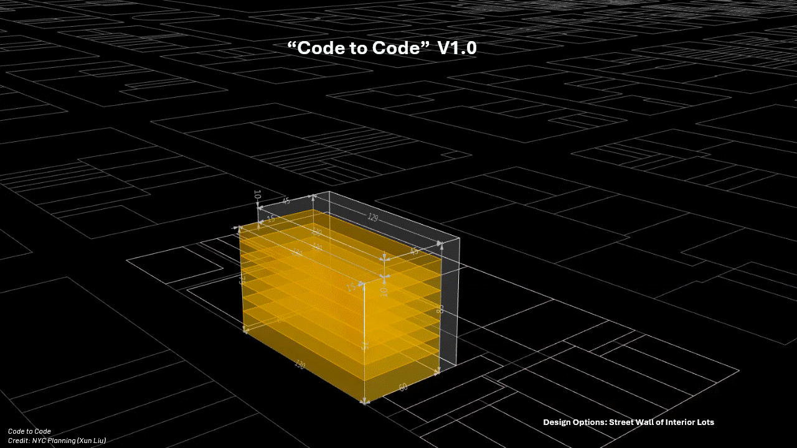
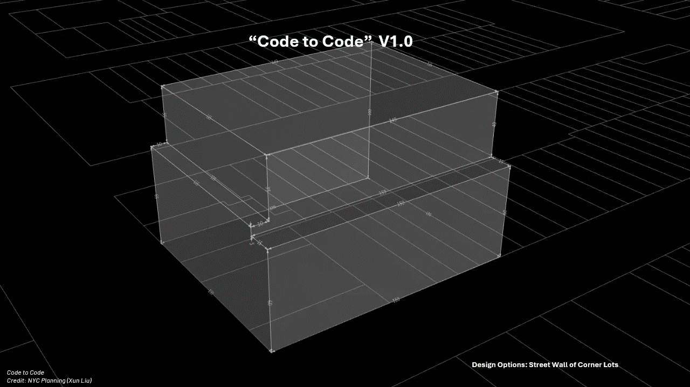
05 · Impact
The new tools significantly speed up the traditional GIS–Modeling–Calculating–Remodeling process; the leap from quantitative to qualitative change enables more relational and integrated studies of the city.
90%
Time & cost saved
per zoning study
$30K+
Cost savings
per neighborhood zoning study
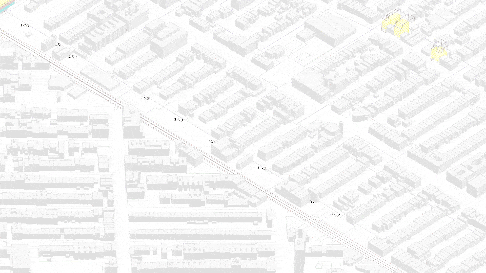
06 · Behind the scene
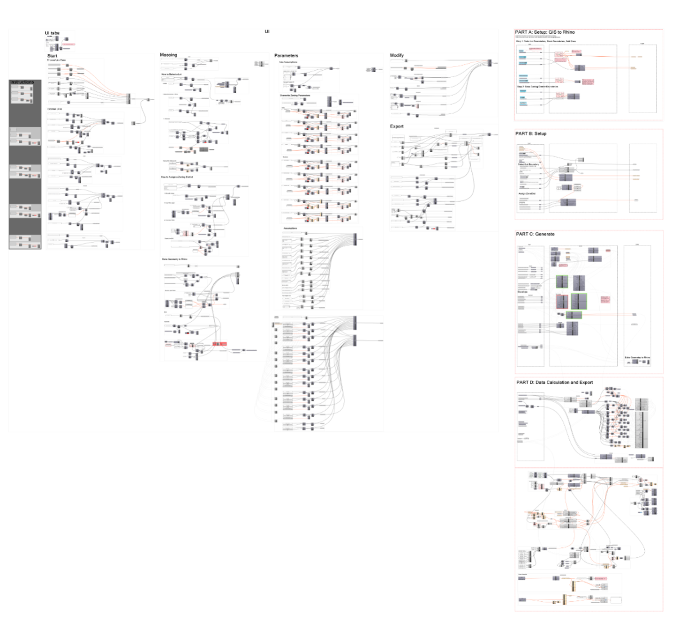